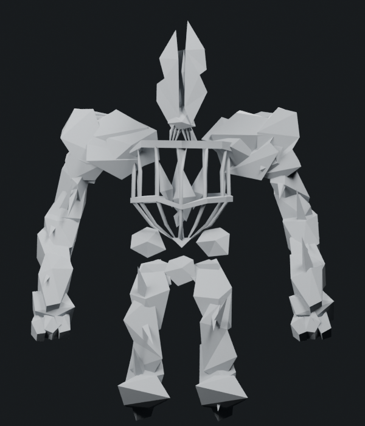
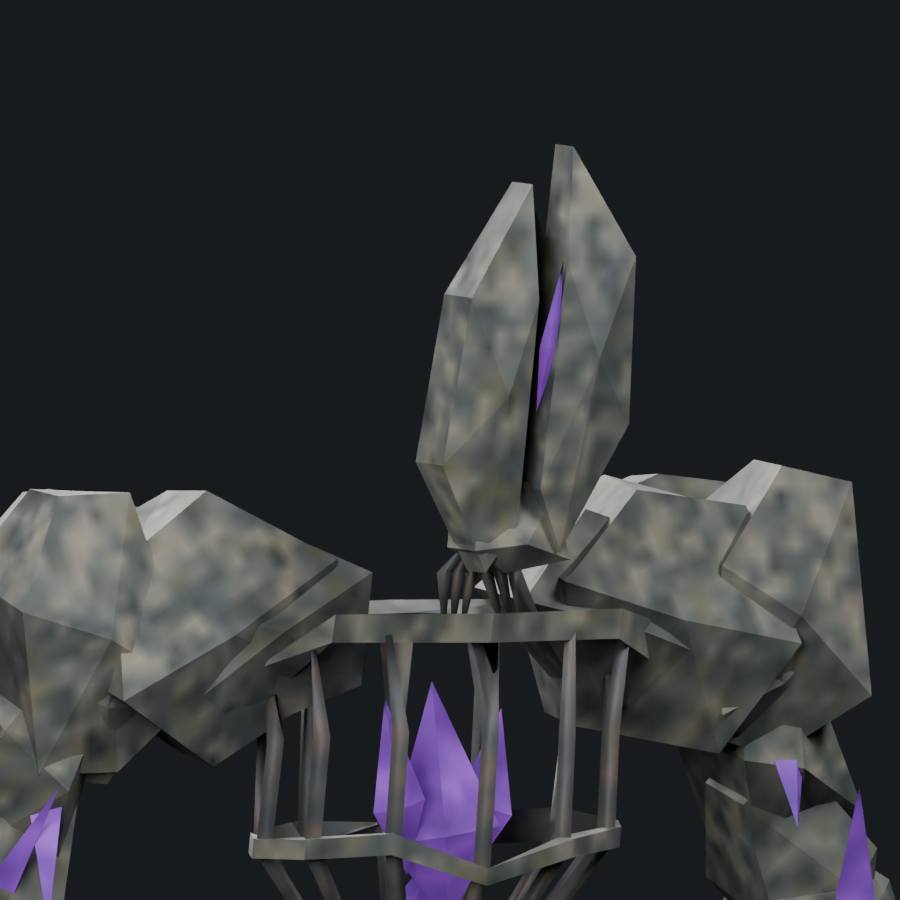
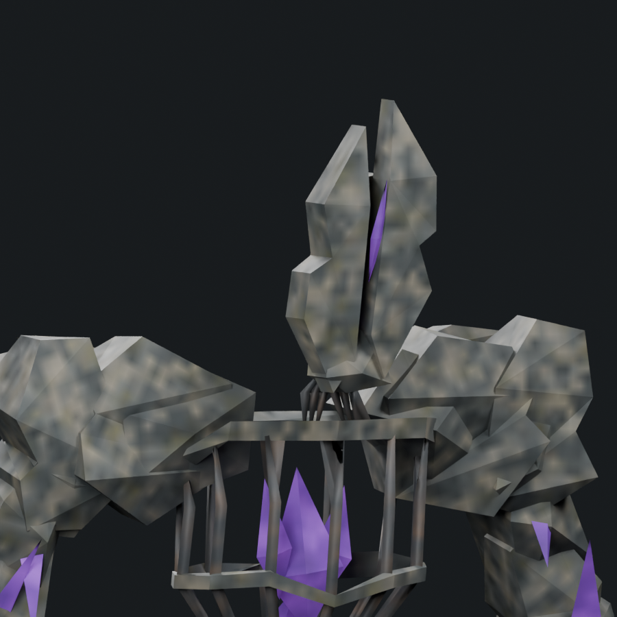
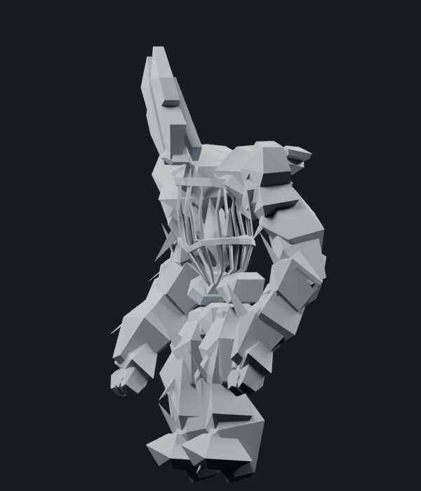
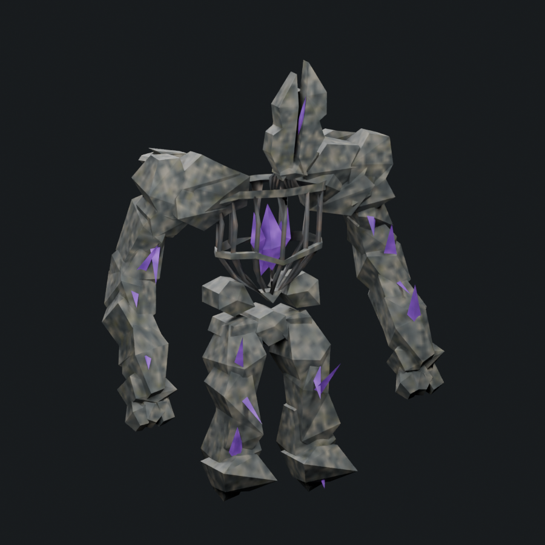

The two head halves and six shoulder plates have actual stepped outer contours, replacing long unbroken edges. Four central forearm/shin plates have inward notches and angular shell faces. Eight triangles from the rear head plate and twenty-four from simpler palm, foot and pelvis surfaces are reassigned to the visible head/shoulder outlines. All nineteen remodeled stone shells remain closed. These are outline and topology changes; the r10 surface style is retained and re-baked for the revised shapes.
1,800 triangles · native Stone Golem 1,200 · 1.500× · cap 1,800. One mesh/material, four packed 512px maps, eight original bone identities and seven actions. Both torso rings, the forward crest rake, limb crystal growths and original arm-root blends remain.








The first attachment audit caught an arm closing face bridging a new shoulder notch. The full buried six-vertex section was contracted toward a common interior anchor; a left upper-thorax section received the same correction. The repaired closing faces, not merely their boundaries, pass the saved animated checks.
All 76 support groups pass rest and 35 sampled action poses. Basal-face interiors/edges pass 8,064 arm/digit, 14,112 crystal and 2,016 upper-thorax samples across the same 36 poses, with zero measured outside distance. Saved manifold/finite/nondegenerate geometry, weights, retained rig/actions, packed maps and portable skinned export pass. Native every-frame deformation and live performance remain pending.
This continues the 85% concept-match target; it is not a claim that the target is reached. More individual fragmentation, crest debris, core density and controlled weathering remain. The original planning range is 8–12 substantial passes after r10; r11 is the first checkpoint, with a reassessment after r12. Progress and outlook. Adequately reworked boss tally remains 1/6.
Editable Blender model · Skinned export · Attack pose · Changes and triangle transfers · Nineteen closed shells · Mesh/export checks · Support checks · Arm/digit basal faces · Crystal basal faces · Upper-thorax basal faces · Camera direction · Source provenance